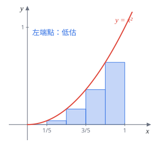
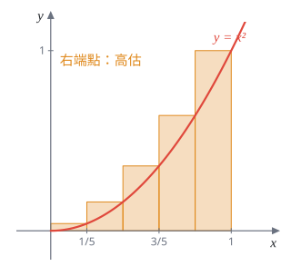
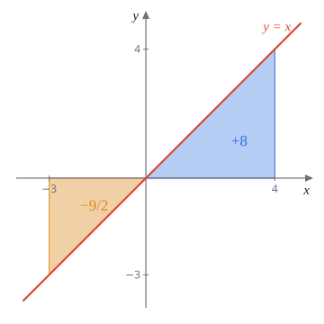
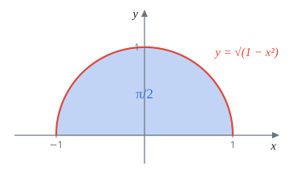
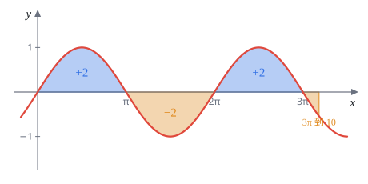
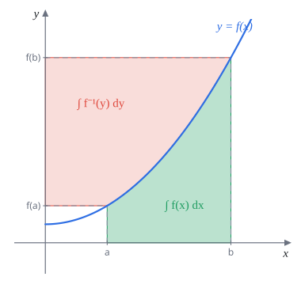

Week 9 Riemann 和與定積分
AP Calculus I（115 學年）Lecture Note 9 教學與題解
講義筆誤p.70 最後一題：$F(x)=\displaystyle\int_0^x(-t^2+3t)\,dt$ 沒有全域最大值（$x\to-\infty$ 時 $F(x)\to+\infty$），$x=3$ 是局部最大，也是 $x\ge0$ 範圍內的最大。答案 $R=3$ 照這個意思理解（題 16）。
前八週都在處理「斜率」，這週開始處理「面積」。做法只有一個想法：曲線底下的面積不好算，就切成很多細長的長方形加起來，切得越細越準，取極限就是面積。這個極限叫定積分。
這週還沒有微積分基本定理（FTC，下週），所以很多積分只能靠「把面積看出來」：三角形、梯形、半圓、對稱抵消。§9.2 的題目需要 FTC 才算得出最後的數字，會先借用下週的結果，並清楚標出來。
9.1 動機：$y=x^2$ 底下的面積（*）
把 $[0,1]$ 切成 $n$ 等份，每份寬 $\dfrac1n$。每一小段上蓋一個長方形，高度取函數在某一點的值：
- 左端點法（Left Hand Rule）：高度取小區間左端的函數值。
- 右端點法（Right Hand Rule）：高度取右端的函數值。
$x^2$ 在 $[0,1]$ 遞增，所以左端點的長方形都比曲線矮（低估），右端點的都比曲線高（高估）。兩者夾著真正的面積，$n\to\infty$ 時差距消失。


計算時要用到兩個求和公式：
$$\sum_{i=1}^{N} i=\frac{N(N+1)}{2},\qquad \sum_{i=1}^{N} i^2=\frac{N(N+1)(2N+1)}{6}.$$題 1用左端點法求 $y=x^2$ 與 $x$ 軸在 $[0,1]$ 之間的面積。
分點 $0\lt\frac1n\lt\frac2n\lt\cdots\lt\frac{n-1}n\lt1$。第 $i$ 個小區間 $\left[\frac in,\frac{i+1}n\right]$（$i=0,1,\dots,n-1$）的長方形高 $f\!\left(\frac in\right)=\frac{i^2}{n^2}$，寬 $\frac1n$。
$$\sum_{i=0}^{n-1}\frac{i^2}{n^2}\cdot\frac1n=\frac1{n^3}\sum_{i=1}^{n-1}i^2=\frac{(n-1)n(2n-1)}{6n^3}.$$（$i=0$ 那項是 $0$，所以求和可以從 $1$ 開始；公式代 $N=n-1$。）分子展開最高次是 $2n^3$，取極限：
$$\int_0^1x^2\,dx=\lim_{n\to\infty}\frac{(n-1)n(2n-1)}{6n^3}=\frac26=\frac13.$$$\dfrac13$
題 2改用右端點法算 $\displaystyle\int_0^1x^2\,dx=\frac13$。
第 $i$ 個小區間 $\left[\frac{i-1}n,\frac in\right]$（$i=1,\dots,n$）取右端點，高 $\frac{i^2}{n^2}$：
$$\sum_{i=1}^{n}\frac{i^2}{n^2}\cdot\frac1n=\frac{n(n+1)(2n+1)}{6n^3}\ \xrightarrow{\ n\to\infty\ }\ \frac26=\frac13.$$右端點和比左端點和多了最後一個長方形 $\frac{n^2}{n^2}\cdot\frac1n=\frac1n$、少了第一個（高 $0$），差 $\frac1n\to0$，所以兩者極限相同。
$\dfrac13$
長方形高度其實不一定要取端點，小區間裡任何一點 $x_i^*$ 都可以，只要函數連續，極限都一樣。挑一個好算的點，有時能讓和直接算出來，下一題就是例子。
題 3(a) 對任意 $[a,b]\subset[1,2]$，證明 $\sqrt{ab}\in[a,b]$。
(b) 取 $x_i^*=\sqrt{\left(1+\frac{i-1}n\right)\left(1+\frac in\right)}\in\left[1+\frac{i-1}n,1+\frac in\right]$（$i=1,\dots,n$），求 $\displaystyle\int_1^2\frac1{x^2}\,dx$。提示：$\dfrac1{m(m+1)}=\dfrac1m-\dfrac1{m+1}$。
(a) $0\lt a\le b$，所以 $a^2=a\cdot a\le ab\le b\cdot b=b^2$。三者都是正數，開根號不改變大小：$a\le\sqrt{ab}\le b$。
(b) 由 (a)，$x_i^*$ 確實落在第 $i$ 個小區間裡。高度
$$f(x_i^*)=\frac1{(x_i^*)^2}=\frac1{\left(1+\frac{i-1}n\right)\left(1+\frac in\right)}=\frac{n^2}{(n+i-1)(n+i)}.$$乘上寬 $\frac1n$，再用提示（$m=n+i-1$）：
$$f(x_i^*)\cdot\frac1n=\frac{n}{(n+i-1)(n+i)}=n\left(\frac1{n+i-1}-\frac1{n+i}\right).$$從 $i=1$ 加到 $n$，中間全部抵消（望遠鏡和），只剩頭尾：
$$\sum_{i=1}^n n\left(\frac1{n+i-1}-\frac1{n+i}\right)=n\left(\frac1n-\frac1{2n}\right)=\frac12.$$每個 $n$ 的和都剛好是 $\frac12$，極限當然也是。
$\displaystyle\int_1^2\frac1{x^2}\,dx=\frac12$
定義 9.1.1$f(x)\ge0$ 在 $[a,b]$ 連續。$y=f(x)$ 在 $[a,b]$ 底下的面積定義為
$$\text{Area}=\lim_{n\to\infty}\frac{b-a}{n}\sum_{k=1}^{n}f\!\left(a+k\cdot\frac{b-a}{n}\right).$$右邊的和叫 Riemann 和。
看懂這個式子：$\frac{b-a}n$ 是每個長方形的寬，$a+k\cdot\frac{b-a}n$ 是第 $k$ 個小區間的右端點，所以這就是右端點法。
9.2 把 Riemann 和化成積分（*）
上一節是「用和去算積分」；這一節反過來，看到一個長得很像 Riemann 和的極限，把它認出來，改用積分去算。
定理 9.2.1（Riemann 和）$f$ 分段連續，則
$$\lim_{n\to\infty}\frac1n\sum_{k=1}^{bn}f\!\left(\frac kn\right)=\int_0^bf(x)\,dx.$$求和範圍 $\sum_{k=1}^{bn}$ 換成 $\sum_{k=c}^{bn+d}$（$c,d$ 是固定常數）結果不變。
這只是定義 9.1.1 取 $a=0$：寬 $\frac1n$，第 $k$ 個右端點 $\frac kn$，從 $0$ 走到 $b$ 需要 $bn$ 步。頭尾多幾項或少幾項，每項只有 $\frac1n$ 那麼大，極限裡看不出來。
解題套路看到 $\displaystyle\lim_{n\to\infty}\sum$：
- 想辦法提出一個 $\frac1n$，剩下的部分全部寫成 $\frac kn$ 的函數 $f\!\left(\frac kn\right)$。
- 看 $k$ 從哪跑到哪，$\frac kn$ 就從哪跑到哪，那就是積分範圍。
- 算積分。
第 3 步要用到下週的微積分基本定理：如果 $F'(x)=f(x)$，則 $\displaystyle\int_a^bf(x)\,dx=F(b)-F(a)$。這一節的題目先借用它，需要的 $F$ 都是前幾週學過的導數倒過來（例如 $(\ln x)'=\frac1x$、$(\tan^{-1}x)'=\frac1{1+x^2}$）。
題 4求 $\displaystyle\lim_{n\to\infty}\left(\frac{1^2}{n^3+1^3}+\frac{2^2}{n^3+2^3}+\cdots+\frac{(2n)^2}{n^3+(2n)^3}\right)=\lim_{n\to\infty}\sum_{k=1}^{2n}\frac{k^2}{n^3+k^3}$。
分子分母同除 $n^3$，湊出 $\frac kn$：
$$\frac{k^2}{n^3+k^3}=\frac{k^2/n^3}{1+(k/n)^3}=\frac1n\cdot\frac{(k/n)^2}{1+(k/n)^3}.$$所以 $f(x)=\dfrac{x^2}{1+x^3}$，$k$ 從 $1$ 到 $2n$，$\frac kn$ 從 $0$ 附近到 $2$：
$$\lim_{n\to\infty}\frac1n\sum_{k=1}^{2n}f\!\left(\frac kn\right)=\int_0^2\frac{x^2}{1+x^3}\,dx.$$$\left(\frac13\ln(1+x^3)\right)'=\frac13\cdot\frac{3x^2}{1+x^3}=\frac{x^2}{1+x^3}$，所以
$$\int_0^2\frac{x^2}{1+x^3}\,dx=\frac13\ln9-\frac13\ln1=\frac23\ln3.$$$\dfrac23\ln3$
題 5求 $\displaystyle\lim_{n\to\infty}\sum_{k=n+1}^{2n}\frac1k$。
$\dfrac1k=\dfrac1n\cdot\dfrac1{k/n}$，所以 $f(x)=\frac1x$。$k$ 從 $n+1$ 到 $2n$，$\frac kn$ 從 $1$ 附近走到 $2$。
這裡起點是 $1$ 不是 $0$，直接用定義 9.1.1（$a=1$，$b=2$，寬 $\frac1n$，第 $j$ 個右端點 $1+\frac jn$）：令 $k=n+j$，
$$\sum_{k=n+1}^{2n}\frac1k=\frac1n\sum_{j=1}^{n}\frac1{1+j/n}\ \xrightarrow{\ n\to\infty\ }\ \int_1^2\frac1x\,dx=\ln2-\ln1=\ln2.$$$\ln2$
題 6把極限寫成定積分並求值。
(a) $\displaystyle\lim_{n\to\infty}\sum_{i=1}^n\frac{i^4}{n^5}$ (b) $\displaystyle\lim_{n\to\infty}\frac1n\sum_{i=1}^n\frac{n^2}{n^2+i^2}$
(a) $\dfrac{i^4}{n^5}=\dfrac1n\left(\dfrac in\right)^4$，$f(x)=x^4$，範圍 $[0,1]$：
$$\int_0^1x^4\,dx=\frac{x^5}{5}\Big|_0^1=\frac15.$$(b) 分子分母同除 $n^2$：$\dfrac{n^2}{n^2+i^2}=\dfrac1{1+(i/n)^2}$，$f(x)=\dfrac1{1+x^2}$，範圍 $[0,1]$：
$$\int_0^1\frac1{1+x^2}\,dx=\tan^{-1}1-\tan^{-1}0=\frac\pi4.$$(a) $\displaystyle\int_0^1x^4\,dx=\frac15$ (b) $\displaystyle\int_0^1\frac{dx}{1+x^2}=\frac\pi4$，與講義答案相同
題 7求 $\displaystyle\lim_{n\to\infty}\sum_{k=1}^n\frac1{\sqrt{n^2+k}}$。（Riemann 和？夾擠定理？）
試著提 $\frac1n$：$\dfrac1{\sqrt{n^2+k}}=\dfrac1n\cdot\dfrac1{\sqrt{1+k/n^2}}$。裡面是 $\frac k{n^2}$ 不是 $\frac kn$，湊不成 Riemann 和。改用夾擠定理。
$k$ 介於 $1$ 和 $n$ 之間，所以每一項
$$\frac1{\sqrt{n^2+n}}\le\frac1{\sqrt{n^2+k}}\le\frac1{\sqrt{n^2}}=\frac1n.$$$n$ 項加起來：
$$\frac{n}{\sqrt{n^2+n}}\le\sum_{k=1}^n\frac1{\sqrt{n^2+k}}\le1.$$左邊 $=\dfrac1{\sqrt{1+1/n}}\to1$，右邊是 $1$，夾擠得極限為 $1$。
$1$
9.3 不能積分的函數（*）
前面說「取小區間裡任何一點當高度，極限都一樣」，這要靠函數夠好（例如連續）。下面這個函數壞到每個小區間裡最高和最低差 $1$，怎麼切都消不掉。
判斷方法：每個小區間都取最高點當高度，得到上和 $U(f)$；都取最低點，得到下和 $L(f)$。$n\to\infty$ 時兩者極限相等才叫 Riemann 可積。
題 8$f(x)=\begin{cases}1,&x\in[0,1]\cap\mathbb Q\\0,&x\in[0,1]\setminus\mathbb Q\end{cases}$。證明 $f$ 在 $[0,1]$ 不是 Riemann 可積。
Step 1 把 $[0,1]$ 切成 $n$ 等份 $\left[\frac in,\frac{i+1}n\right]$。
Step 2 有理數和無理數都是稠密的：不管小區間多短，裡面一定同時有有理數 $x_i^M$ 和無理數 $x_i^m$。所以每個小區間上
$$\max f=f(x_i^M)=1,\qquad \min f=f(x_i^m)=0.$$ $$U(f)=\lim_{n\to\infty}\sum_{i=1}^n1\cdot\frac1n=\lim_{n\to\infty}1=1,\qquad L(f)=\lim_{n\to\infty}\sum_{i=1}^n0\cdot\frac1n=0.$$Step 3 $U(f)\ne L(f)$，所以 $f$ 在 $[0,1]$ 不是 Riemann 可積。
上和恆為 $1$、下和恆為 $0$，不可積
接下來兩題是連續函數，直接用右端點法把 Riemann 和算出來。難點在求和：$\sum\sin(kd)$ 和 $\sum e^{k/n}$ 都有封閉公式。
題 9用右端點法算 $f(x)=\sin x$ 在 $[0,1]$ 的 Riemann 和極限。
先求 $S_n=\sum_{k=1}^n\sin(kd)$。兩邊乘 $\sin\frac d2$，用積化和差 $\sin A\sin B=\frac12[\cos(A-B)-\cos(A+B)]$：
$$\sin\frac d2\cdot S_n=\frac12\sum_{k=1}^n\left[\cos\!\left(kd-\frac d2\right)-\cos\!\left(kd+\frac d2\right)\right].$$第 $k$ 項的後半 $\cos\left(kd+\frac d2\right)$ 正好是第 $k+1$ 項的前半，全部抵消，剩
$$S_n=\frac{\cos\frac d2-\cos\left(nd+\frac d2\right)}{2\sin\frac d2}.$$代入 Riemann 和。寬 $\frac1n$，右端點 $\frac kn$，所以 $d=\frac1n$：
$$\frac1n\sum_{k=1}^n\sin\frac kn=\frac1n\cdot\frac{\cos\frac1{2n}-\cos\left(1+\frac1{2n}\right)}{2\sin\frac1{2n}}=\frac{1}{2n\sin\frac1{2n}}\left[\cos\frac1{2n}-\cos\left(1+\frac1{2n}\right)\right].$$令 $h=\frac1{2n}\to0^+$，前面的因子 $\dfrac{h}{\sin h}\to1$；括號裡 $\to\cos0-\cos1=1-\cos1$。
$\displaystyle\int_0^1\sin x\,dx=1-\cos1\approx0.4597$
同樣的算法把 $[0,1]$ 換成 $[0,b]$（$d=\frac bn$），會得到 $\displaystyle\int_0^b\sin x\,dx=1-\cos b$。特別是 $\displaystyle\int_0^\pi\sin x\,dx=1-\cos\pi=2$：$\sin$ 的一個拱面積是 $2$，題 15 會用到。
題 10用右端點法算 $f(x)=e^x$ 在 $[0,1]$ 的 Riemann 和極限。
令 $r=e^{1/n}$，則 $e^{k/n}=r^k$。等比級數 $a+ar+\cdots+ar^{n-1}=\dfrac{a(r^n-1)}{r-1}$，首項 $a=r$：
$$\frac1n\sum_{k=1}^ne^{k/n}=\frac1n\cdot\frac{r(r^n-1)}{r-1}=\frac1n\cdot\frac{e^{1/n}(e-1)}{e^{1/n}-1}=(e-1)\cdot\frac{e^{1/n}}{n\left(e^{1/n}-1\right)}.$$令 $h=\frac1n\to0^+$，$\dfrac{e^{1/n}}{n(e^{1/n}-1)}=\dfrac{he^h}{e^h-1}=e^h\cdot\dfrac{h}{e^h-1}\to1\cdot1=1$（$\frac{e^h-1}h\to1$ 就是 $e^x$ 在 $0$ 的導數）。
$\displaystyle\int_0^1e^x\,dx=e-1$
9.4 定積分
9.4.1 定積分是有號面積
定義 9.4.1$f$ 分段連續。$f$ 在 $[a,b]$ 的定積分 $\displaystyle\int_a^bf(x)\,dx$ 定義為 $y=f(x)$ 在 $[a,b]$ 的有號面積：$x$ 軸上方算正、下方算負。$x$ 是啞變數，換成什麼字母都一樣：
$$\int_a^bf(x)\,dx=\int_a^bf(K)\,dK=\int_a^bf(\square)\,d\square.$$- 約定：$a\le b$ 時 $\displaystyle\int_b^af(x)\,dx=-\int_a^bf(x)\,dx$（倒著積分差一個負號）。
- 配合定義 9.1.1，$\displaystyle\int_a^bf(x)\,dx\overset{\text{def}}{=}\lim_{n\to\infty}\frac{b-a}n\sum_{k=1}^nf\!\left(a+k\cdot\frac{b-a}n\right)$。$f$ 是負的時候長方形「高度」是負數，自動算成負面積。
這週算積分的主力是幾何：圖形若是三角形、梯形、圓，直接用面積公式，記得 $x$ 軸下方的部分加負號。
題 11求 $\displaystyle\int_{-3}^4x\,dx$。
$y=x$ 和 $x$ 軸圍出兩個三角形：$[-3,0]$ 在下方，底 $3$ 高 $3$，面積 $\frac92$，算負；$[0,4]$ 在上方，底 $4$ 高 $4$，面積 $8$。
$$\int_{-3}^4x\,dx=8-\frac92=\frac72.$$$\dfrac72$

題 12求 $\displaystyle\int_{-1}^1\sqrt{1-x^2}\,dx$。
$y=\sqrt{1-x^2}$ 兩邊平方得 $x^2+y^2=1$，且 $y\ge0$：這是單位圓的上半部。積分就是半徑 $1$ 的半圓面積 $\frac12\pi\cdot1^2$。
$\dfrac\pi2$

題 13求 $\displaystyle\int_0^{6\sqrt2}\lfloor x\rfloor\,dx$（講義寫作 $[[x]]$，高斯函數）。
$\lfloor x\rfloor$ 在 $[k,k+1)$ 上是常數 $k$，圖形是一階一階的樓梯，每一階是寬 $1$、高 $k$ 的長方形。
$6\sqrt2=\sqrt{72}$，$8^2=64\lt72\lt81=9^2$，所以 $8\lt6\sqrt2\lt9$。完整的階是 $k=0,1,\dots,7$，最後一段 $[8,6\sqrt2]$ 高 $8$、寬 $6\sqrt2-8$：
$$\int_0^{6\sqrt2}\lfloor x\rfloor\,dx=(0+1+\cdots+7)+8(6\sqrt2-8)=28+48\sqrt2-64=48\sqrt2-36.$$$48\sqrt2-36$
題 14求 $\displaystyle\int_{-1}^{10}(1+2x)\,dx$。
$y=1+2x$ 在 $x=-\frac12$ 穿過 $x$ 軸。
- $\left[-1,-\frac12\right]$：$x$ 軸下方的三角形，底 $\frac12$，高 $|1+2(-1)|=1$，面積 $\frac14$，算負。
- $\left[-\frac12,10\right]$：上方的三角形，底 $\frac{21}2$，高 $1+20=21$，面積 $\frac12\cdot\frac{21}2\cdot21=\frac{441}4$。
$110$
題 15令 $R=\displaystyle\int_0^{10}\sin x\,dx$，判斷 $R$ 的正負。
$3\pi\approx9.42\lt10\lt4\pi$。把 $[0,10]$ 切成 $[0,\pi]$、$[\pi,2\pi]$、$[2\pi,3\pi]$、$[3\pi,10]$：前三段是三個完整的拱，面積各為 $2$（題 9 後的補充），符號是 $+,-,+$，合計 $+2$。
最後一段 $[3\pi,10]$ 在 $x$ 軸下方，但寬度只有 $10-3\pi\approx0.58$，高度不超過 $1$，面積小於 $0.58$。
$$R\gt2-0.58\gt0.$$（實際值 $R=1-\cos10\approx1.84$。）
$R\gt0$

題 16$F(x)=\displaystyle\int_0^x(-t^2+3t)\,dt$ 在 $x=R$ 取得最大值，求 $R$。
$F(x)$ 是從 $0$ 開始一路累積到 $x$ 的有號面積。被積函數 $-t^2+3t=t(3-t)$：
- $0\lt t\lt3$ 時是正的：$x$ 往右走，面積一直加正的，$F$ 增加。
- $t\gt3$ 時是負的：再往右走開始扣面積，$F$ 減少。
所以在 $x\ge0$ 的範圍，$F$ 在 $x=3$ 最大。
注意 $x\lt0$ 這一側：$F(x)=-\displaystyle\int_x^0(-t^2+3t)\,dt$，而 $[x,0]$ 上被積函數是負的，負負得正，$F(x)\gt0$ 而且 $x$ 越往左越大。用下週的 FTC 算出 $F(x)=-\frac{x^3}3+\frac32x^2$，$x\to-\infty$ 時趨近 $+\infty$。因此 $x=3$ 只是局部最大，$F(3)=-9+\frac{27}2=\frac92$。
$R=3$（局部最大；全域最大不存在，見頁首筆誤）
9.4.2 積分的基本性質
積分就是面積，所以下面的性質都可以從圖形看出來。
定理 9.4.1（奇函數）$f(-x)=-f(x)$，則 $\displaystyle\int_{-a}^af(x)\,dx=0$。
定理 9.4.2（偶函數）$f(-x)=f(x)$，則 $\displaystyle\int_{-a}^af(x)\,dx=2\int_0^af(x)\,dx$。
奇函數對原點對稱，左邊的面積跟右邊一樣大但符號相反，剛好抵消。偶函數對 $y$ 軸對稱，左右面積相同，算一半乘 $2$。
題 17說明 $\displaystyle\int_{-\pi}^{\pi}\sin x\,dx=0$。
$\sin(-x)=-\sin x$，$\sin$ 是奇函數，積分範圍 $[-\pi,\pi]$ 對稱，由定理 9.4.1 得 $0$。圖形上就是 $[-\pi,0]$ 的負拱和 $[0,\pi]$ 的正拱抵消。
$0$
定理 9.4.3（基本性質）$f,g$ 在 $[a,b]$ 分段連續。
- （零面積）$\displaystyle\int_a^af(x)\,dx=0$。
- （單調性）$f\ge g$，則 $\displaystyle\int_a^bf(x)\,dx\ge\int_a^bg(x)\,dx$。
- （線性）$\displaystyle\int_a^b(\lambda f(x)\pm\mu g(x))\,dx=\lambda\int_a^bf(x)\,dx\pm\mu\int_a^bg(x)\,dx$。
- （可加性）$c$ 在 $a,b$ 之間，$\displaystyle\int_a^bf(x)\,dx=\int_a^cf(x)\,dx+\int_c^bf(x)\,dx$。
- （三角不等式）$\displaystyle\left|\int_a^bf(x)\,dx\right|\le\int_a^b|f(x)|\,dx$。
(v) 的直覺：左邊正負面積會互相抵消，右邊全部翻成正的再加，當然比較大。
希望 (iv) 對任何 $a,b,c$ 都成立，取 $c=a$ 就得到 $\int_a^b+\int_b^a=\int_a^a=0$，於是：
定義 9.4.2（反向積分）$\displaystyle\int_b^af(x)\,dx=-\int_a^bf(x)\,dx$。
定理 9.4.4（Vanishing rule）$f(x)\ge0$ 在 $[a,b]$ 連續。若 $\displaystyle\int_a^bf(x)\,dx=0$，則 $f(x)=0$ 對所有 $x\in[a,b]$ 成立。
直覺：如果某一點 $f(c)\gt0$，因為連續，$c$ 附近一小段都是正的，底下就有一塊正面積；其他地方又不會是負的，總面積不可能是 $0$。
題 18$f$ 連續，且對任何非零多項式 $p(x)$ 都有 $\displaystyle\int_0^1f(x)\big(f(x)-p(x)\big)\,dx=0$。證明 $f(x)=0$ 對所有 $x\in[0,1]$ 成立。
由線性，條件就是 $\displaystyle\int_0^1f^2\,dx=\int_0^1fp\,dx$ 對所有非零多項式 $p$ 成立。
關鍵一步：同一個 $p$ 和 $2p$ 都代進去。
$$\int_0^1f^2\,dx=\int_0^1fp\,dx,\qquad \int_0^1f^2\,dx=\int_0^1f\cdot2p\,dx=2\int_0^1fp\,dx.$$兩式相減得 $\int_0^1fp\,dx=0$，再代回得 $\int_0^1f^2\,dx=0$。
$f^2\ge0$ 且連續，由 Vanishing rule，$f(x)^2=0$，即 $f(x)=0$。
得證
題 19證明對任意 $a\gt0$，$\displaystyle\int_0^ae^x\,dx\ge\frac{(a+2)a}{2}$。
Step 1 證明 $x\ge0$ 時 $e^x\ge x+1$。令 $f(x)=e^x-(x+1)$，$f(0)=0$，$f'(x)=e^x-1\ge0$（$x\ge0$），$f$ 遞增，所以 $f(x)\ge f(0)=0$。
Step 2 由單調性與線性：
$$0\le\int_0^a\big(e^x-(x+1)\big)\,dx=\int_0^ae^x\,dx-\int_0^a(x+1)\,dx.$$$\int_0^a(x+1)\,dx$ 是梯形面積：上底 $1$、下底 $a+1$、高 $a$，等於 $\frac{(1+a+1)a}2=\frac{a(a+2)}2$。移項即得。
得證
解題套路要證積分不等式，先證被積函數之間的不等式（常常用微分判斷增減），再用單調性兩邊積分。
題 20同學 A 說 $\displaystyle\int_0^1\sin(x^2)\,dx\gt2$。你同意嗎？
不同意。$\sin(x^2)\le1$，由單調性
$$\int_0^1\sin(x^2)\,dx\le\int_0^11\,dx=1\lt2.$$這個積分算不出封閉形式，但不用算也能判斷。
不同意，積分不超過 $1$
題 21證明 $-\sqrt2(100-30\pi)\le\displaystyle\int_0^{100}(\sin x+\cos x)\,dx\le\sqrt2(100-30\pi)$。（提示：疊合）
疊合：$\sin x+\cos x=\sqrt2\sin\!\left(x+\frac\pi4\right)$，週期 $2\pi$，振幅 $\sqrt2$。
一個完整週期裡，正拱和負拱一樣大，積分是 $0$。$30\pi\approx94.25\lt100$，$[0,30\pi]$ 剛好是 $15$ 個週期，積分為 $0$。由可加性，
$$\int_0^{100}(\sin x+\cos x)\,dx=\int_{30\pi}^{100}\sqrt2\sin\!\left(x+\frac\pi4\right)dx.$$用三角不等式與 $\left|\sqrt2\sin\left(x+\frac\pi4\right)\right|\le\sqrt2$：
$$\left|\int_{30\pi}^{100}\sqrt2\sin\!\left(x+\frac\pi4\right)dx\right|\le\int_{30\pi}^{100}\sqrt2\,dx=\sqrt2(100-30\pi).$$絕對值不等式拆開就是要證的兩邊。
得證
題 22求 (a) $\displaystyle\int_{-10}^{10}|x|\,dx$ (b) $\displaystyle\int_{-10}^{10}\lfloor x\rfloor^2\,dx$。$f(x)=\lfloor x\rfloor^2$ 是偶函數嗎？
(a) $|x|$ 是偶函數：$2\displaystyle\int_0^{10}x\,dx=2\cdot\frac{10\cdot10}2=100$。
(b) 先回答偶函數的問題：不是。$f(0.5)=0^2=0$，$f(-0.5)=(-1)^2=1$。$\lfloor x\rfloor$ 往下取整，負數那一側的樓梯整個錯開一格，不對稱，所以不能用 $2\int_0^{10}$。
直接一階一階加：$[k,k+1)$ 上 $f=k^2$，$k$ 從 $-10$ 到 $9$：
$$\sum_{k=-10}^{9}k^2=\sum_{k=1}^{10}k^2+\sum_{k=1}^{9}k^2=385+285=670.$$如果誤當成偶函數，會得到 $2\sum_{k=0}^9k^2=570$，少了 $100$。
(a) $100$ (b) $670$；$\lfloor x\rfloor^2$ 不是偶函數
講義用一個實際應用為這一大節收尾。
題 23王老師想用一家餐廳的 wifi，密碼是下列積分結果取前 6 位數字：$\displaystyle\int_{-2}^2\left(x^3\cos\frac x2+\frac12\right)\sqrt{4-x^2}\,dx$。幫他算出密碼。
由線性拆成兩個積分：
$$\int_{-2}^2x^3\cos\frac x2\sqrt{4-x^2}\,dx+\frac12\int_{-2}^2\sqrt{4-x^2}\,dx.$$第一個：$x^3$ 是奇函數，$\cos\frac x2$、$\sqrt{4-x^2}$ 是偶函數，奇 $\times$ 偶 $\times$ 偶 是奇函數，範圍對稱，積分為 $0$。
第二個：$y=\sqrt{4-x^2}$ 是半徑 $2$ 的上半圓，面積 $\frac12\pi\cdot2^2=2\pi$，乘 $\frac12$ 得 $\pi$。
結果 $\pi=3.14159\ldots$，取前 6 位。
密碼 $314159$
9.5 反函數的積分（*）
定理 9.5.1$f$ 在 $[a,b]$ 上是正的、連續、一對一，$f^{-1}$ 是反函數，則
$$\int_a^bf(x)\,dx+\int_{f(a)}^{f(b)}f^{-1}(x)\,dx=bf(b)-af(a).$$看圖：$f$ 遞增時，綠色是曲線底下的面積 $\int_a^bf$。反函數的圖是原圖對 $y=x$ 鏡射，所以 $\int_{f(a)}^{f(b)}f^{-1}(y)\,dy$ 就是曲線左邊、夾在 $y=f(a)$ 和 $y=f(b)$ 之間的紅色面積。兩塊拼起來是大長方形 $b\times f(b)$ 挖掉左下角小長方形 $a\times f(a)$。

解題套路積分裡的函數很醜、但它的反函數很好積（或反過來），就用這個定理把問題換到另一邊。題目若同時出現 $f$ 和 $f^{-1}$，更是明示。
題 24（Lambert W 函數）$W:\mathbb R^+\to\mathbb R^+$ 滿足 $W(x)e^{W(x)}=x$（$x\ge0$），也就是 $W$ 是 $f(x)=xe^x$ 在 $\mathbb R^+$ 上的反函數。
(a) 證明 $f(x)=xe^x$ 在 $\mathbb R^+$ 上連續且一對一。
(b) 求 $\displaystyle\int_0^eW(x)\,dx$。
(a) $f$ 是連續函數的乘積，連續。$f'(x)=e^x+xe^x=(x+1)e^x\gt0$，嚴格遞增，所以一對一。
(b) $W$ 本身沒有初等的式子，直接積不動，改積它的反函數 $xe^x$。$f(0)=0$、$f(1)=e$，套定理（$a=0$，$b=1$）：
$$\int_0^1xe^x\,dx+\int_0^eW(x)\,dx=1\cdot f(1)-0\cdot f(0)=e.$$$\big((x-1)e^x\big)'=e^x+(x-1)e^x=xe^x$，借用下週的 FTC：$\int_0^1xe^x\,dx=(0)\cdot e-(-1)\cdot1=1$。
$$\int_0^eW(x)\,dx=e-1.$$$e-1$
題 25正、連續、一對一的函數 $f$ 滿足 $f(0)=0$、$f(3)=3$、$\displaystyle\int_0^3f(x)\,dx=\frac95$。求 $\displaystyle\int_0^3f^{-1}(x)\,dx$。
$a=0$，$b=3$，$f(a)=0$，$f(b)=3$：
$$\frac95+\int_0^3f^{-1}(x)\,dx=3\cdot3-0=9\quad\Longrightarrow\quad\int_0^3f^{-1}(x)\,dx=9-\frac95=\frac{36}5.$$$\dfrac{36}5$
題 26（2020 UC Berkeley Integral Bee）求 $\displaystyle\int_1^2\left[\left(e^{1-\frac1{(x-1)^2}}+1\right)+\left(1+\frac1{\sqrt{1-\ln(x-1)}}\right)\right]dx$。
先令 $u=x-1$，範圍變成 $[0,1]$（平移不改變面積）。常數 $1+1$ 在長度 $1$ 的區間上貢獻 $2$，剩下
$$\int_0^1e^{1-\frac1{u^2}}\,du+\int_0^1\frac1{\sqrt{1-\ln u}}\,du.$$兩項看起來都積不動，猜它們互為反函數。令 $g(u)=e^{1-1/u^2}$，解 $y=g(u)$：
$$\ln y=1-\frac1{u^2}\ \Longrightarrow\ u^2=\frac1{1-\ln y}\ \Longrightarrow\ u=\frac1{\sqrt{1-\ln y}}.$$果然第二項就是 $g^{-1}$。$g$ 在 $(0,1]$ 遞增，$u\to0^+$ 時 $g\to e^{-\infty}=0$（補定義 $g(0)=0$），$g(1)=1$。套定理（$a=0$，$b=1$）：
$$\int_0^1g+\int_0^1g^{-1}=1\cdot1-0=1.$$全部加起來 $1+2=3$。
$3$
題 27（2025 MIT Integral Bee 決賽）求 $\displaystyle\int_0^1\left(\sqrt{\frac1{4x^2}+\frac1x-x}-\sqrt{\frac{x^4}4-x+1}-\frac1{2x}\right)dx$。提示：$y=f(x)=\dfrac{-1+\sqrt{1+4x-4x^3}}{2x}$。
認出 $f$。$\sqrt{\frac1{4x^2}+\frac1x-x}=\sqrt{\frac{1+4x-4x^3}{4x^2}}=\frac{\sqrt{1+4x-4x^3}}{2x}$，所以第一項減 $\frac1{2x}$ 正好是 $f(x)$。
求 $f^{-1}$。從 $2xy+1=\sqrt{1+4x-4x^3}$ 平方：
$$4x^2y^2+4xy+1=1+4x-4x^3\ \Longrightarrow\ xy^2+y=1-x^2\ \Longrightarrow\ x^2+y^2x+(y-1)=0.$$把它當成 $x$ 的二次方程式，取正根：
$$x=\frac{-y^2+\sqrt{y^4-4y+4}}{2}=\sqrt{\frac{y^4}4-y+1}-\frac{y^2}2.$$所以 $f^{-1}(x)=\sqrt{\frac{x^4}4-x+1}-\frac{x^2}2$，第二項 $\sqrt{\frac{x^4}4-x+1}=f^{-1}(x)+\frac{x^2}2$。被積函數整理成
$$f(x)-f^{-1}(x)-\frac{x^2}2.$$用定理。$x\to0^+$ 時 $f(x)=\dfrac{-1+\sqrt{1+4x-4x^3}}{2x}\to1$（$\sqrt{1+4x-4x^3}$ 在 $0$ 的導數是 $2$，所以分子約為 $2x$），補定義 $f(0)=1$；$f(1)=\frac{-1+1}2=0$。$f$ 從 $1$ 遞減到 $0$。套定理（$a=0$，$b=1$）：
$$\int_0^1f(x)\,dx+\int_1^0f^{-1}(x)\,dx=1\cdot0-0\cdot1=0\ \Longrightarrow\ \int_0^1f=\int_0^1f^{-1}.$$（圖形上，$f$ 底下的面積和 $f^{-1}$ 底下的面積是同一塊區域鏡射，本來就相等。）所以前兩項抵消：
$$\int_0^1\left(f-f^{-1}\right)dx-\int_0^1\frac{x^2}2\,dx=0-\frac16=-\frac16.$$$-\dfrac16$
定理 9.5.1 寫的條件是「$f$ 為正」，這題 $f(1)=0$、上一題 $g(0)=0$，端點碰到 $0$ 不影響面積，公式照樣成立。$f$ 遞減時公式也對，只是 $\int_{f(a)}^{f(b)}$ 是由大積到小，要照反向積分的規則加負號。
本週必背總整理
- Riemann 和：$\displaystyle\int_a^bf(x)\,dx=\lim_{n\to\infty}\frac{b-a}n\sum_{k=1}^nf\!\left(a+k\frac{b-a}n\right)$，寬乘高加起來取極限
- 求和公式：$\sum i=\frac{N(N+1)}2$，$\sum i^2=\frac{N(N+1)(2N+1)}6$
- 極限化積分：提出 $\frac1n$、其餘寫成 $f\!\left(\frac kn\right)$，$\frac kn$ 跑的範圍就是積分範圍；湊不出來就試夾擠
- 不可積：上和與下和極限不同（有理數取 $1$、無理數取 $0$ 的函數）
- 有號面積：$x$ 軸上方正、下方負；三角形、梯形、半圓直接用面積公式
- 奇偶：奇函數在 $[-a,a]$ 積分為 $0$；偶函數 $=2\int_0^a$。$\lfloor x\rfloor^2$ 不是偶函數
- 性質：線性、可加性、$f\ge g\Rightarrow\int f\ge\int g$、$\left|\int f\right|\le\int|f|$、$\int_b^a=-\int_a^b$
- Vanishing rule：$f\ge0$ 連續且 $\int_a^bf=0$，則 $f\equiv0$
- 反函數積分：$\displaystyle\int_a^bf+\int_{f(a)}^{f(b)}f^{-1}=bf(b)-af(a)$